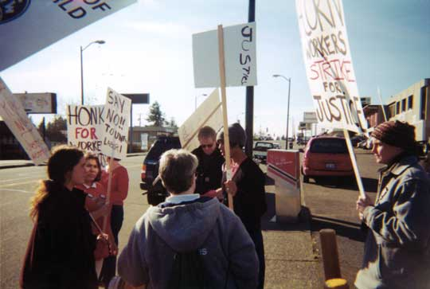

<!DOCTYPE html PUBLIC "-//W3C//DTD XHTML 1.0 Strict//EN" "http://www.w3.org/TR/xhtml1/DTD/xhtml1-strict.dtd">
<html xmlns="http://www.w3.org/1999/xhtml" xml:lang="en" lang="en" dir="ltr">

<!-- Mirrored from www.iww.org/node/1539 by HTTrack Website Copier/3.x [XR&CO'2014], Sun, 19 Apr 2020 04:23:38 GMT -->
<!-- Added by HTTrack --><meta http-equiv="content-type" content="text/html;charset=utf-8" /><!-- /Added by HTTrack -->
<head>
<meta http-equiv="Content-Type" content="text/html; charset=utf-8" />
<title>SEIU VP And ACORN Leader Charged With Racism | Industrial Workers of the World</title>
<meta http-equiv="Content-Type" content="text/html; charset=utf-8" />
<link rel="shortcut icon" href="../../sites/default/files/iww_adaptive_favicon.png" type="image/x-icon" />
<meta name="viewport" content="width=device-width" />
<link type="text/css" rel="stylesheet" media="all" href="../../sites/default/files/css/css_7ce5aae73e433650f3296973d095f9b6.css" />
<script type="text/javascript" src="../../sites/default/files/js/js_93786c886bbb1c408f63a3e67f5ba734.js"></script>
<script type="text/javascript">
<!--//--><![CDATA[//><!--
jQuery.extend(Drupal.settings, { "basePath": "/", "dhtmlMenu": { "slide": "slide", "clone": "clone" }, "nice_menus_options": { "delay": 800, "speed": 1 } });
//--><!]]>
</script>
</head>
<body class="not-front not-logged-in page-type-story one-sidebar sidebar-first i18n-en section-node">
<a href="https://iww.org/" style="display:block;top:0;z-index:1000;position:sticky;position:-webkit-sticky;"><div style="padding:10px;background-color:#000;color:#fdfdfd;text-align:center;vertical-align:middle;">This site is a static archive. Visit the current IWW website at iww.org ▸</div></a>
<div id="page" class="container">
<div id="skip-nav" class="element-invisible">
<a href="#main-content">Skip to main content</a>
</div>
<div id="header" class="clearfix">
<div id="branding">
<div class="brand-elements"><strong>
<span id="site-name"><a href="https://iww.org" rel="home">Industrial Workers of the World</a></span> </strong></div>
</div> 
<div id="my-account">
</div>
<div id="header-region"><div id="block-block-24" class="block block-block">
<div class="block-inner">
<div class="content block-content"><div style="float:right;">
<ul>
<li><a target="_blank" href="https://www.facebook.com/iww.org"></a></li>
<li><a target="_blank" href="https://twitter.com/IWW"></a></li>
<li><a target="_blank" href="http://www.youtube.com/user/TheIndustrialWorkers" title="IWW YouTube Channel"></a></li>
<li><a alt="IWW alerts@lists.iww.org email list" target="_blank" href="http://lists.iww.org/listinfo/alerts"></a></li>
<li><a target="_blank" href="http://store.iww.org/donations.html"> </a></li>
<li><a target="_blank" href="../feed/"> </a></li>
</ul>
</div></div>
</div>
</div>
</div>
</div> 
<div id="primary-menu" class="nav clearfix">
<h2 class="element-invisible">Main Menu</h2>
<ul class="nice-menu nice-menu-down" id="nice-menu-1"><li class="menu-5468 menu-path-node first  odd "><a href="../../" title="IWW Home Page" id="dhtml_menu-5468">Home</a></li>
<li class="menu-15495 menu-path-https--iwworg-content-join-one-big-union even "><a href="../../content/join-one-big-union/" title="Join the One Big Union" id="dhtml_menu-15495">Join the IWW</a></li>
<li class="menu-11054 menu-path-node-6735 odd "><a href="../../content/about-iww/" title="Who we are, what we stand for, popular conceptions (and misconceptions) of the IWW." id="dhtml_menu-11054">About Us</a></li>
<li class="menu-117 menu-path-node-640 even "><a href="../../organize/" title="Contact the IWW Organizing Department and/or set up an IWW Organizer Training." id="dhtml_menu-117">Organize</a></li>
<li class="menu-9659 menu-path-node-721 odd "><a href="../../branches/" title="A directory of IWW branches, regional organizing committees, and delegates by location." id="dhtml_menu-9659">Directory</a></li>
<li class="menu-11370 menu-path-iwworg-en-history even "><a href="../../history/" title="The IWW&#039;s history, culture (including where we got our nickname &quot;Wobbly&quot;), myths and legends, biographies, and an archive of our writings." id="dhtml_menu-11370">History</a></li>
<li class="menu-2501 menu-path-storeiwworg odd "><a href="http://store.iww.org/" title="Purchase merchandise online from the IWW literature department." id="dhtml_menu-2501">Store</a></li>
<li class="menu-118 menu-path-node-831 even  last "><a href="../../contact/" title="Contact the IWW about organizing, website suggestions and/or corrections, press inquiries, or other general matters." id="dhtml_menu-118">Contact Us</a></li>
</ul>
</div>
<div id="columns"><div class="columns-inner clearfix">
<div id="content-column"><div class="content-inner">
<div id="main-content">
<div id="main-content-header">
<h1 id="page-title">SEIU VP And ACORN Leader Charged With Racism</h1> </div>
<div id="content"><div id="article-1539" class="article article-full article-type-story">
<div class="article-inner clearfix">
<p class="submitted">Submitted on Fri, 10/28/2005 - 4:02pm</p>
<p><u>Disclaimer</u><em> - The following article is reposted here because it is an issue with some relevance to the IWW. The views of the author do not necessarily agree with those of the IWW and vice versa.</em> </p><p>Wade Rathke, ACORN&nbsp; CEO and union buster is up to his old tricks again.&nbsp; Recall that ACORN engaged in <a href="../../history/campaigns/acorn/" target="_self">union busting against the IWW</a> four years ago.&nbsp; Now he's attacking a New Orleans based grassroots union Community Labor United.&nbsp; The IWW is publishing this letter in solidarity with CLU:</p><hr /><p><span class="redbar"> An Open Letter to the Labor Movement Regarding Katrina:</span> October 19, 2005</p> <p> Brothers and Sisters,</p> <p> The crisis for the working class (whether employed or not, waged or not) continues to grow. Even as the nation, and especially the poor and Black working class of the Gulf states and New Orleans in particular, tries to pick up the pieces after Katrina's (and Rita's) devastation, the assault by capital and their partners in the government grows more intense - the suspension of Davis Bacon and OHSA safeguards, plans to defund the safety net to finance business interests in the reconstruction of the region, little thought to how those left behind will find a home in the reconstruction process and its outcome. The Democrats have failed to articulate a credible alternative to this plan or address this crisis in any significant way.</p> <p> It is also true that the flip side of disaster is opportunity. For the trade unions the moment presents a unique opportunity, not open since the sit-downs of the 1930s, to bring dignity, voice, a living wage and benefits in the form of unions to the masses left behind in New Orleans and the Gulf Coast, particularly the poor and African American. It is a well established fact that Blacks are the most pro-union force in the U.S. They have proven time and time again to be this country's most dedicated fighters of oppression. But the trade union movement may not be able to take advantage of this opportunity unless it addresses issues not yet confronted in any meaningful way by the debate and the programs of the two new federations.</p> <p> Now these issues have surfaced in the wake of Katrina, specifically in a piece by ACORN and SEIU leader, Wade Rathke entitled 'Chalabi and Katrina' (For full text see, <a target="_self" href="http://www.chieforganizer.org/">www.chieforganizer.org</a>, blog entry 'Chalabi and Katrina, October 3rd) that disparages an organization, Community Labor United, and one of its principle organizers, Curtis Muhammad, with deep roots in the voter registration drives in Mississippi, the Student Non-Violent Coordinating Committee, and for the last 20 years a part of the New Orleans community.</p> <p> Days after the hurricane and while struggling with their own displacement, CLU folks began to pull together what has become the People's Hurricane and Relief Fund. Since then they have held two national meetings, the first on September 10th with participation from 49 different organizations, and the second, September 30-October 1st, with more than 100 participants from prisoner's and women's rights groups, predominantly black cultural, faith-based and educational groups, non-union worker organizations, community groups, legal scholars and the ACLU. A Coordinating Committee, representing the breadth and community organizations throughout the Gulf Region as well as CLU's own base, was chosen by the survivors, working subcommittees and 6 regional communications centers (organizing offices) have been established. There has been widespread support for the PHRF both nationally and internationally. (For more see the PHRF website: <a target="_self" href="http://www.communitylaborunited.net/">www.communitylaborunited.net</a>).</p> <p> With this background we want to examine the issues raised by 'Chalabi and Katrina:' 1. Confront racism within our movement. White leaders, even those with a membership base is predominantly Black and Latino, should be careful about making pronouncements about who is genuine and who has the requisite skills. Confronting racism means understanding that our culture, economic and political system is built on racialized capital and we operate within that context. Diversity should not be confused with power. If we are serious about bringing unions to the south (all those red states and their right to work laws) then we need to cede power to those very folks we seek to organize. The job of unions is to help give these forces additional information and resources they might not currently have so that they can chart their own future.</p> <p> 2. This movement must be built democratically from the bottom up, engaging the base to develop tactics and strategies that speak to their constituencies' own needs, culture and history. The grassroots must control their own organization and movement. Remarks that belittle the work of grassroots activists of many years standing, organizing on a model based on experience among working class and poor Blacks of the south, but which does not fit the union template, has no place in the labor movement. We have too much to learn from each other.</p> <p> 3. Fund and collaborate, and be prepared to take leadership from indigenous Black (and Latino, Asian, and Native American) forces on the ground. Many of these forces prior to the hurricane were not organized in ways that the unions are. They do not have a large paid staff, or offices with all the trappings. But that does not mean that organizations like CLU are 'little bitty' or insignificant or cannot handle money or even to question 'if they could organize a two car funeral if they were driving both cars.' (see 'Chalabi and Katrina') This disrespect fails to on one hand to acknowledge that the base of the labor movement (and with it dues dollars) and the CLU are the same, and on the other hand, the severe obstacles, principally racism and the legacy of slavery that on-the-ground folks face in the south. Networking and informal ties have protected and nourished their organizing long after efforts like Operation Dixie or the Civil Rights Movement have moved on or declared victory. Organizations like CLU demand our respect and support.</p> <p> 4. Build a united front against the enemies of working people, employed or the unemployed poor. Our task is so huge that we can not afford to undercut each other with name calling, patronizing statements and inappropriate remarks. We must air differences in a principled way. Many of us work with ACORN in our cities and are good terms with many organizers from that group. We cannot believe that such a provocative and destructive letter was circulated by Wade to other ACORN leaders or reflects their views. We hope that people of good will in ACORN will give some signals to disassociate themselves from this divisive and chauvinist tactic. None of us has discovered the sure- fire way to organize or build a movement. Let's not give our enemies more fire power than they already possess. The Cold War era purges of the labor movement should have taught us that.</p> <p> We exist at what one might describe as a 'Katrina moment.' It is a moment of both reflection and action. It is a moment to better understand and unpack the issues of race and class that have become so obvious through this disaster. It is also a moment to challenge the prevailing neo-liberal economic theories that were partially to blame for the scope of the disaster, and seem to be central to the discussion of the nature of reconstruction. It is also a moment for a mass response to the disaster, which means that this is not the time for any one organization to hold itself up as the central core or the provider of franchises. To put it in other terms, this may be a moment to lay the foundations for a rebirth of a labor movement that is in synch with other social forces that share our opposition to the steady slide toward barbarism.</p> <p> In solidarity, (In alphabetical order)</p> <p> Ajamu Baraka, Executive Director, US Human Rights Network</p> <p> Gene Bruskin, co-convener of USLAW*</p> <p> Nemesio Domingo, Chair, LELO</p> <p> Kathy Engel, founding Executive Director MADRE*, cultural and communications worker</p> <p> Ray Eurquhart, Retired UE 150 volunteer organizer</p> <p> Bill Fletcher, Jr., President, TransAfrica Forum</p> <p> Bill Gallegos, Executive Director, Communities for a Better Environment</p> <p> Stan Goff, Writer-Activist</p> <p> Badili Jones, member SEIU Local 1985</p> <p> Hany Khalil, Organizing Coordinator, United for Peace and Justice*</p> <p> Elly Leary, Vice President and Chief Negotiator, UAW 2324 (retired)</p> <p> Judith LeBlanc, National Co-Chair, United for Peace and Justice*</p> <p> Charles Lester, Director of Programs and Operations, United Domestic Workers of America/AFSCME, NUHHCE</p> <p> Eric Mann, veteran of CORE, SDS, and UAW</p> <p> John McCarthy, member TWU Local 100</p> <p> Charlene Mitchell, National Co-chair Committees of Correspondence for Democracy &amp; Socialism</p> <p> Rev. Osagyefo Uhuru Sekou, National Coordinator, Clergy and Laity Concerned About Iraq*</p> <p> Marsha Steinberg, Field Representative/Organizer SEIU Local 660*</p> <p> Makani Themba-Nixon, Executive Director, The Praxis Project</p> <p> Jerry Tucker, former member International Executive Board, UAW</p> <p> Steve Williams, Executive Director, People Organized to Win Employment Rights (POWER)</p> <p> Michael Yates</p> <p> * for identification purposes only </p><p><span class="blackbar">(Original Post) - Chalabi and Katrina</span> </p><p><strong>By <a target="_self" href="http://www.chieforganizer.org.php?id=57&amp;no_cache=1&amp;tx_eeblog%5Bsword%5D=Chalabi%20and%20katrina">Wade Rathke</a> - October 3, 2005</strong>.&nbsp;</p><p>Secretary of Defense Donald Rumsfeld had a candidate to front for the Iraqi people  Dr. Ahmad Chalabi. He had been running the Iraqi National Congress for many years from the United Kingdom. He had a degree from the University of Chicago. He was connected. Former Secretary of State Colin Powell was not as certain and neither was the Army. Each in turn had their own ex-pat Iraqi leaders who they hoped would get traction once repatriated to home soil.</p> <p>Make no mistake though. When they were not in Iraqi, but working the world promoting schemes for liberation armies or business ventures or this or that, they had friends and sponsors based on the value that these men and their political formations served to their sponsors, not for the Iraqi people. They were tools in the hands of others.</p> <p>Watching the embarrassment of the Bush Administration when it was trying harder to install provisional and puppet fronts for the invading force, I would have thought we might have all learned lessons about making sure as an a priori in these matters that one should be very, very careful not to anoint someone from afar, who can not operate on the ground. Now in the middle of the post-Katrina shakeout, I can see that this is not the case. Progressives seem not to want to learn what the conservatives have taught us. We want to make sure we learn the lessons the hard way with our own embarrassment.</p> <p>In the wake of Katrina everyone and their brother seems to suddenly be interested in New Orleans and trying to figure out a way to insert themselves and their issues into the muck that remains of the city. Some of this is a good thing.</p> <p>Where it gets hairy is when people try to create representatives for the people for the purposes of the sponsors and the donor community, just like we have seen in Iraq.</p> <p>New Orleans Mayor Ray Nagin tried this strategy slightly with his recent appointments of a commission, but was simply the usual home cooking from the Poydras Street business crowd with their favorite front people and the usual gang of suspects, just a few bigger names.</p> <p>The most bizarre, and in some ways insulting, question I have been asked in the wake of Katrina is to identify groups to act as sponsor go betweens, just as if New Orleans was another foreign country like Iraq. It is insulting because whether we are talking about almost 10000 family members of ACORN in New Orleans or a couple of thousand members of Local 100 from the city  we have a base, it just doesn't happen to be in New Orleans, since it is caught in the diaspora now.</p> <p>A good example is something called Community Labor United (CLU). This is a little bitty thing of maybe a dozen or two activists that has convened meetings off and on for years mostly on Saturdays for a while at Dillard and last I heard at the Treme Community Center. Mainly it is not labor but it has a couple of well intentioned AFT teachers that are personally involved and Curtis Muhammad, who ran a small local union for UNITE for a couple of years before he retired, was often in attendance. Mostly I didn't recognize the few other folks there, but some may have been students or whatever. Curtis is a good guy, but good love him, he wouldn't be able to really move any thing in New Orleans, because he doesn't have the base, the weight, the contacts, or the history god love him. To the best of my knowledge CLU was semi-defunct in recent years and certainly never had a paid staff or any capacity. Back 5-6 years ago when it was trying to first get started, we used to send folks to some of the Saturday meetings because they wanted to support our work and act as a bridge to other communities, but over the last couple of years that has also petered out. But now a wave of water moves through New Orleans and I actually get inquires about whether or not CLU can help in some way.</p> <p>Huh? What? They are nice people and we count them as friends and allies, but are we talking about something real there? Of course not! Could they handle money? No reason to believe that. Do they have a base in New Orleans? No not whatsoever. Heck, I don't know if they could organize a two car funeral if they were driving both cars. They have only convened forums in the past to talk about stuff. If that was needed, they could do that I suppose, but there are a lot of folks who can do that.</p> <p>How do Calabi's happen? Just this way! CLU was somehow mentioned by Naomi Klein in a piece in the Nation. I have no idea what she knows about New Orleans, but I imagine she was grabbing something out of the hat. The article gets reprinted some places, and all of a sudden Chalabi is out and about in New Orleans.</p> <p>Habitat and Enterprise have had very small, precious operations around housing in New Orleans which are producing very, very few houses annually. Best believe they are everywhere now as if they could really do something in New Orleans. This is a President Bush prop up.</p> <p>But, a prop up is a prop up, and there will be a day of reckoning. People will move back to New Orleans. There will be a battle for the future of the city and people will not be able to be ignored or merely represented from afar. Their opinions will matter more than the opinion pages.</p> <p>Hopefully progressives will not be caught with Chalabi on their hands and learn one lesson from Rumsfeld about this phenomena.</p> <ul class="links term-links"><li class="taxonomy_term_36 first last"><a href="../../category/union-news/news-all-departments-and-unions/department-600-public-service/restaurant-hotel-a/" rel="tag" title="This page displays *all* news items from Restaurant, Hotel, and Building Service Workers Industrial Union 640.  
For an overview of the IU 640&#039;s history and contact information, please visit our homepage.">Restaurant, Hotel, and Building Service Workers I.U. 640</a></li></ul> </div>
</div>
</div>
</div> 
</div></div> 
<div id="sidebar-first" class="sidebar"><div id="block-menu-menu-resources-menu" class="block block-menu">
<div class="block-inner">
<h2 class="title block-title">Resources</h2>
<div class="content block-content"><ul class="menu"><li class="leaf first dhtml-menu "><a href="../../image/" title="" id="dhtml_menu-9874-1">Image Galleries</a></li>
<li class="leaf  dhtml-menu "><a href="../../content/paying-your-dues/" title="" id="dhtml_menu-9876-1">Pay Your IWW Dues</a></li>
<li class="leaf last dhtml-menu "><a href="../../headquarters/" title="" id="dhtml_menu-9875-1">IWW Headquarters</a></li>
</ul></div>
</div>
</div>
<div id="block-menu-menu-standing-committees" class="block block-menu">
<div class="block-inner">
<h2 class="title block-title">Standing Committees</h2>
<div class="content block-content"><ul class="menu"><li class="leaf first dhtml-menu "><a href="../../projects/gec/" title="" id="dhtml_menu-11547-1">Gender Equity Committee</a></li>
<li class="expanded  dhtml-menu  collapsed start-collapsed "><a href="../../projects/gdc/" title="defense and relief to members of the working class who are being persecuted for their activity in the class struggle" id="dhtml_menu-7105-1">General Defense Committee</a><ul class="menu"><li class="leaf first dhtml-menu "><a href="../../projects/gdc/join/" id="dhtml_menu-7156-1">Join the GDC</a></li>
<li class="leaf last dhtml-menu "><a href="../../content/general-defense-contact-form/" title="" id="dhtml_menu-9681-1">Contact the GDC</a></li>
</ul></li>
<li class="leaf  dhtml-menu "><a href="https://incarceratedworkers.org/" title="Incarcerated Workers Organizing Committee" id="dhtml_menu-15249-1">Incarcerated Workers</a></li>
<li class="leaf  dhtml-menu "><a href="../../projects/isc/" title="" id="dhtml_menu-7106-1">Int&#039;l Solidarity Commission</a></li>
<li class="leaf last dhtml-menu "><a href="../../committees/SRC/" title="" id="dhtml_menu-12653-1">Survey and Research Committee</a></li>
</ul></div>
</div>
</div>
<div id="block-menu-menu-public-campaigns" class="block block-menu">
<div class="block-inner">
<h2 class="title block-title">Campaigns</h2>
<div class="content block-content"><ul class="menu"><li class="expanded first dhtml-menu  collapsed start-collapsed "><a href="../../campaigns/foodchain/" title="" id="dhtml_menu-11803-1">Food &amp; Retail Chain Workers</a><ul class="menu"><li class="leaf first dhtml-menu "><a href="http://www.jimmyjohnsworkers.org/" title="Jimmy John&#039;s Workers Union" id="dhtml_menu-9667-1">Jimmy John&#039;s Union</a></li>
<li class="leaf last dhtml-menu "><a href="https://iwwgmbsheffield.wordpress.com/pizza-hut-workers-union/" title="" id="dhtml_menu-12664-1">Pizza Hut Workers Union</a></li>
</ul></li>
<li class="leaf last dhtml-menu "><a href="../../history/campaigns/" title="A list of selected current and historic IWW campaigns." id="dhtml_menu-11493-1">More</a></li>
</ul></div>
</div>
</div>
<div id="block-menu-menu-industrial-organizing" class="block block-menu">
<div class="block-inner">
<h2 class="title block-title">Industrial Organizing</h2>
<div class="content block-content"><ul class="menu"><li class="leaf first dhtml-menu "><a href="../../unions/dept400/iu450/" title="All workers who produce and distribute newspapers, books, catalogues, and other printed matter including reporters, journalists, staff writ- ers, photographers, graphic artists, researchers, and programmers within the publishing industry." id="dhtml_menu-13264-1">IU 450 Printing and Publishing Workers</a></li>
<li class="leaf  dhtml-menu "><a href="../../unions/dept400/iu460/" title="All workers, except agricultur- al and fishery workers, who produce, process, and distribute foodstuffs, beverages, and tobacco products." id="dhtml_menu-10317-1">IU 460 Foods Product Workers</a></li>
<li class="leaf  dhtml-menu "><a href="../../unions/dept500/iu510/" title="All workers in cargo and passenger transportation by water. All repair, maintenance, and supply workers specific to the marine industry,
including food, beverage, and newsstand workers in ports." id="dhtml_menu-11497-1">IU 510 Marine Workers</a></li>
<li class="leaf  dhtml-menu "><a href="../../unions/dept500/iu520/" title="All workers in long distance railway freight and passenger transportation. All repair,mainte- nance, and supply workers specific to the railroad industry including food, beverage, and newsstand workers in railroad terminals." id="dhtml_menu-11501-1">IU 520 Railroad Workers</a></li>
<li class="leaf  dhtml-menu "><a href="https://incarceratedworkers.org/" title="All incarcerated workers in the prison industry." id="dhtml_menu-15502-1">IU 613 Incarcerated Workers (IWOC)</a></li>
<li class="leaf  dhtml-menu "><a href="../../unions/dept600/iu620/" title="All workers in educational institutions including educators, students (except those mainly employed outside the education industry), and those in industries auxiliary to education including testing ser- vices, educational consulting services, and dedicated school bus services, including all workers in research institutions including foundations and museums, enterprises primarily engaged in providing technical and scientific services, and in research laboratories not attached to educational institu- tions." id="dhtml_menu-11496-1">IU 620 Educational Workers</a></li>
<li class="leaf  dhtml-menu "><a href="../../unions/dept600/iu640/" title="All workers in facilities for food and beverage services, public accommodation, and catering services not dedicated to serving a particular industry." id="dhtml_menu-10318-1">IU 640 Restaurant, Hotel, and Catering Workers</a></li>
<li class="leaf  dhtml-menu "><a href="../../unions/dept600/iu660/" title="All workers in general distribution facilities, wholesale and retail." id="dhtml_menu-11495-1">IU 660 Retail Workers</a></li>
<li class="leaf last dhtml-menu "><a href="../../unions/" title="A complete listing of the IWW&#039;s Industrial Unions and Departments." id="dhtml_menu-11055-1">More</a></li>
</ul></div>
</div>
</div>
<div id="block-menu-menu-committees0" class="block block-menu">
<div class="block-inner">
<h2 class="title block-title">Publications &amp; Projects</h2>
<div class="content block-content"><ul class="menu"><li class="leaf first last dhtml-menu "><a href="../../projects/IW/" title="The Official Newspaper of the Industrial Workers of the World" id="dhtml_menu-9418-1">Industrial Worker</a></li>
</ul></div>
</div>
</div>
<div id="block-menu-menu-caucuses" class="block block-menu">
<div class="block-inner">
<h2 class="title block-title">Caucuses</h2>
<div class="content block-content"><ul class="menu"><li class="leaf first dhtml-menu "><a href="https://www.facebook.com/originaliwwapc/" title="" id="dhtml_menu-15251-1">African People&#039;s Caucus</a></li>
<li class="leaf last dhtml-menu "><a href="http://ecology.iww.org/" title="" id="dhtml_menu-13275-1">Environmental Unionist Caucus</a></li>
</ul></div>
</div>
</div>
</div>
</div></div> 
<div id="footer">
<div id="footer-region"><div id="block-block-28" class="block block-block">
<div class="block-inner">
<div class="content block-content"><p>Industrial Workers of the World<br />
General Headquarters<br />
PO Box 180195, Chicago, IL 60618, USA<br />
tel: (773) 728-0996<br />
Email - ghq [at] iww.org<br />
Website - tech [at] iww.org</p>
</div>
</div>
</div>
</div>
<div id="footer-message"></div>
</div> 
</div> 
</body>

<!-- Mirrored from www.iww.org/node/1539 by HTTrack Website Copier/3.x [XR&CO'2014], Sun, 19 Apr 2020 04:23:39 GMT -->
</html>